Cung Đình Trung Hoa — Cung Vương phủ
Tổng mặt bằng

Thiên Tượng Lâu (lầu 10 tầng)
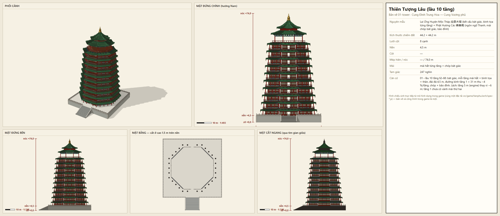
Ngân An Điện 银安殿
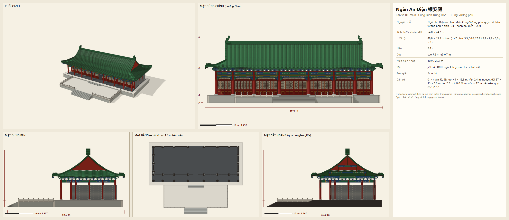
Gia Lạc Đường 嘉乐堂
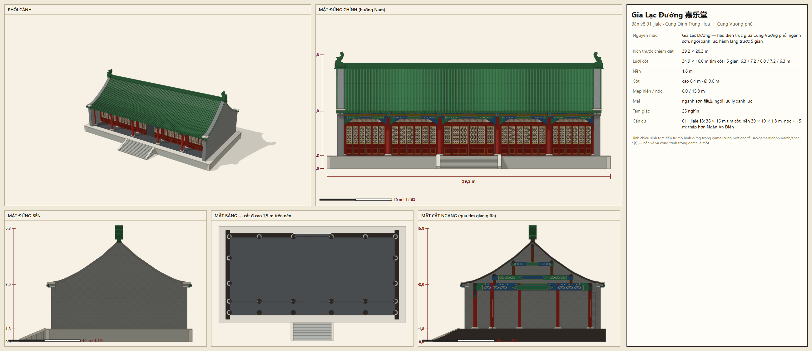
Đa Phúc Hiên 多福轩
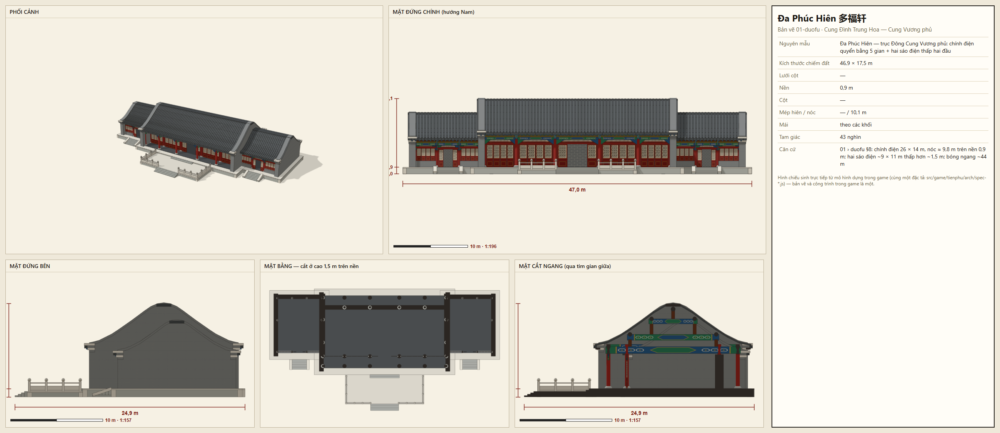
Lạc Đạo Đường 乐道堂
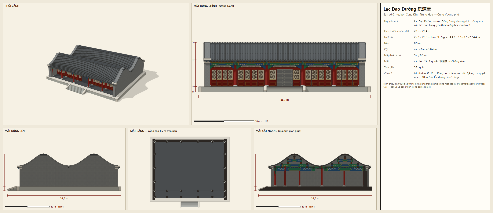
Tích Cẩm Trai (theo Tích Tấn Trai 锡晋斋)
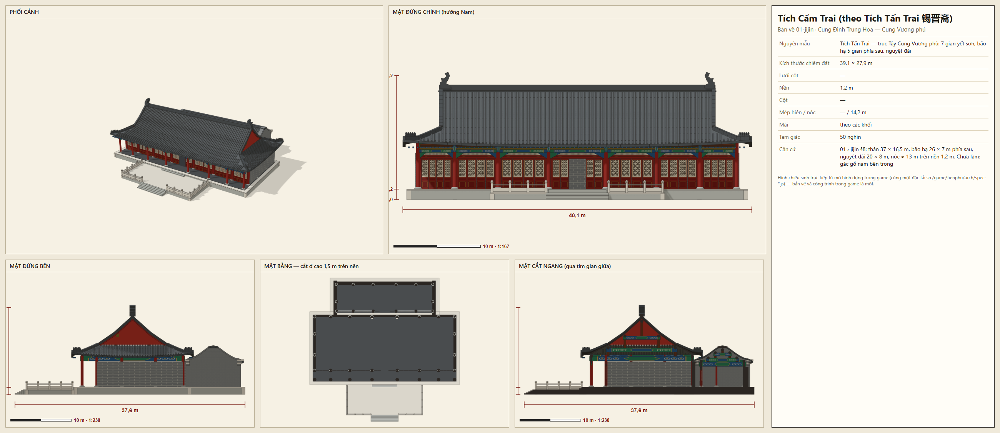
Bảo Quang Thất 葆光室
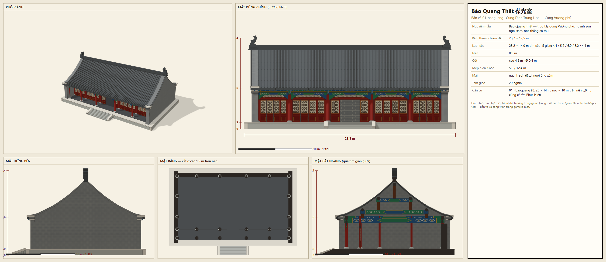
Tích Thúy Đường (theo An Thiện Đường 安善堂)
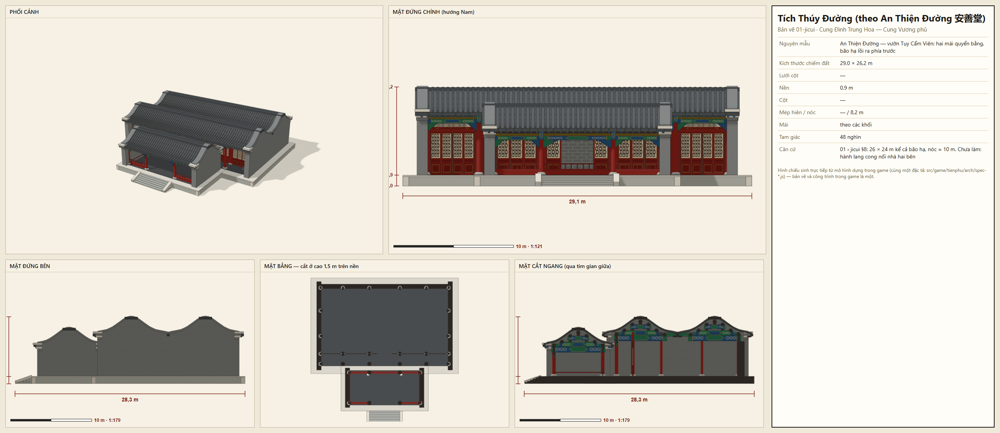
Diệu Hương Lâu (theo Diệu Hương Đình 妙香亭)
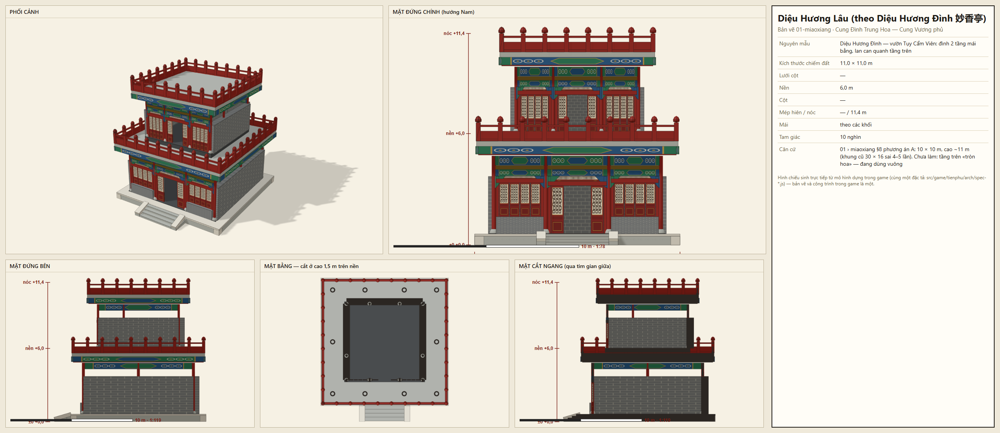
Hậu Tráo Lâu (Tây) 后罩楼
Tây Môn Phòng
Đại Hí Lâu 大戏楼
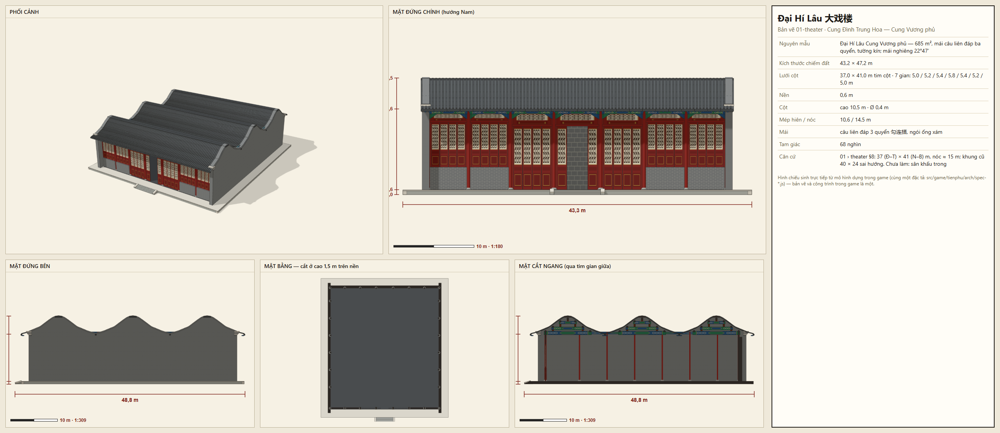
Vọng Sơn Đình
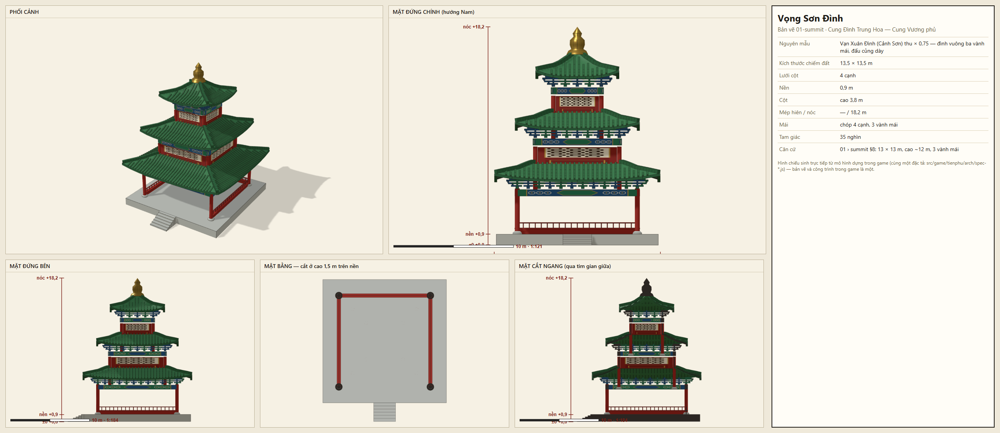
Lưu Bôi Đình 流杯亭
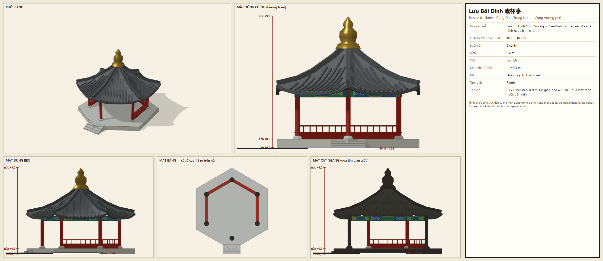
Thính Vũ Hiên (theo Thu Thủy Sơn Phòng)
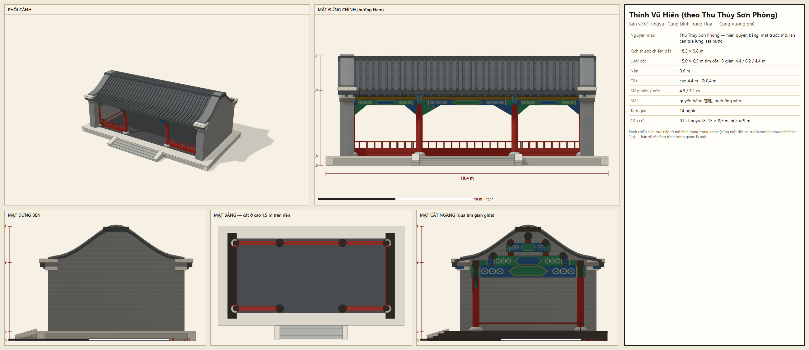
Thủy Tạ
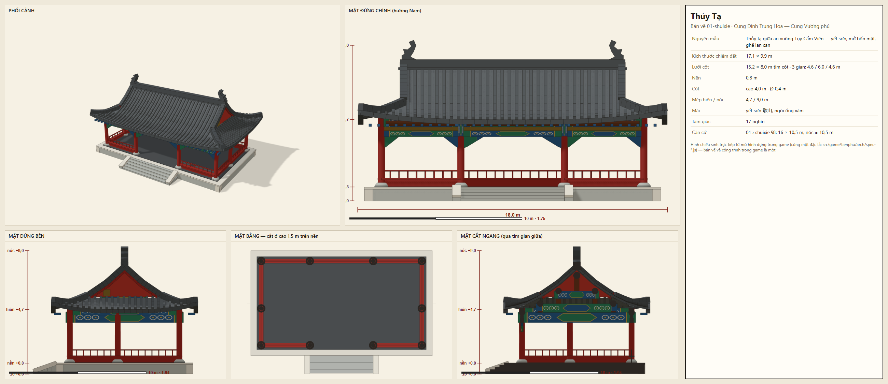
Nguyệt Hương Đình (theo Tri Xuân Đình 知春亭)
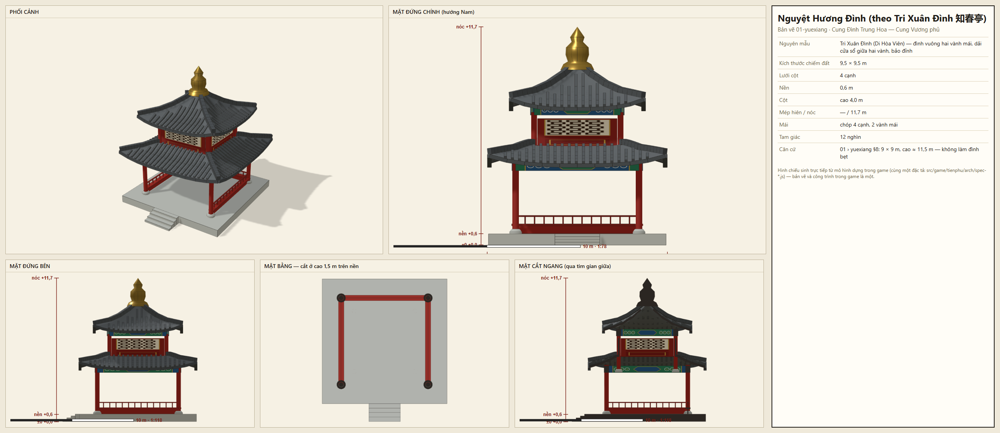
Thúy Vân Đình (theo Lục Thiên Tiểu Ẩn + Yêu Nguyệt Đài)
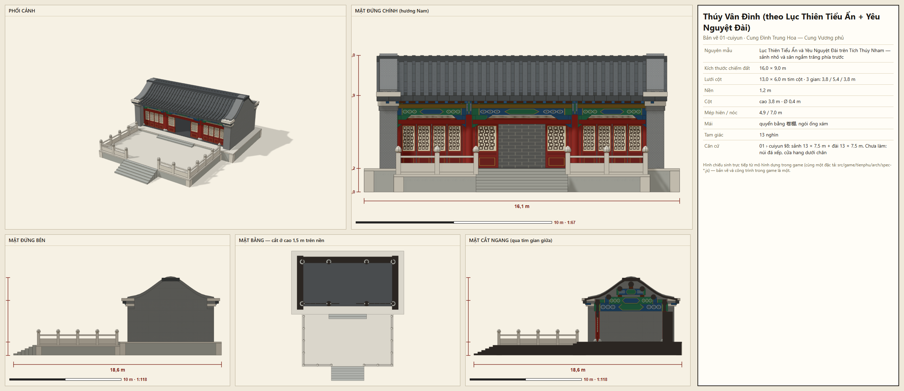
Minh Đạo Đình
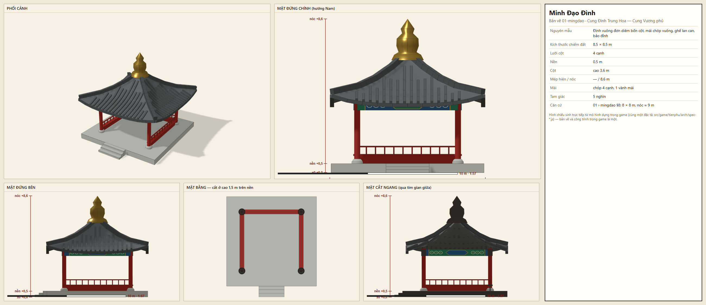
Hậu Tráo Lâu (Đông) 后罩楼
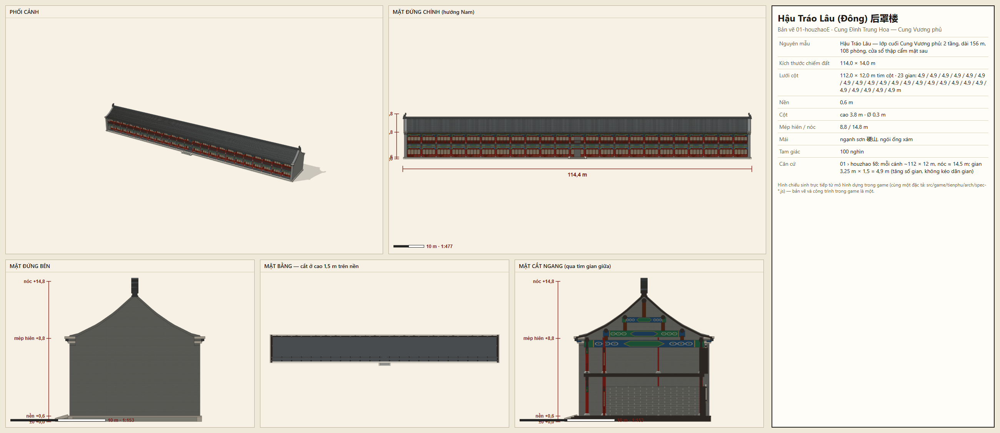
Đông Môn Phòng
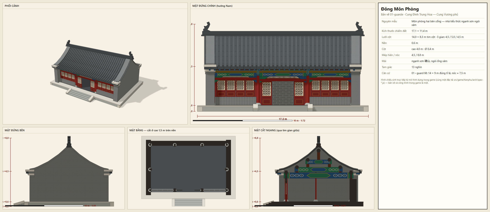